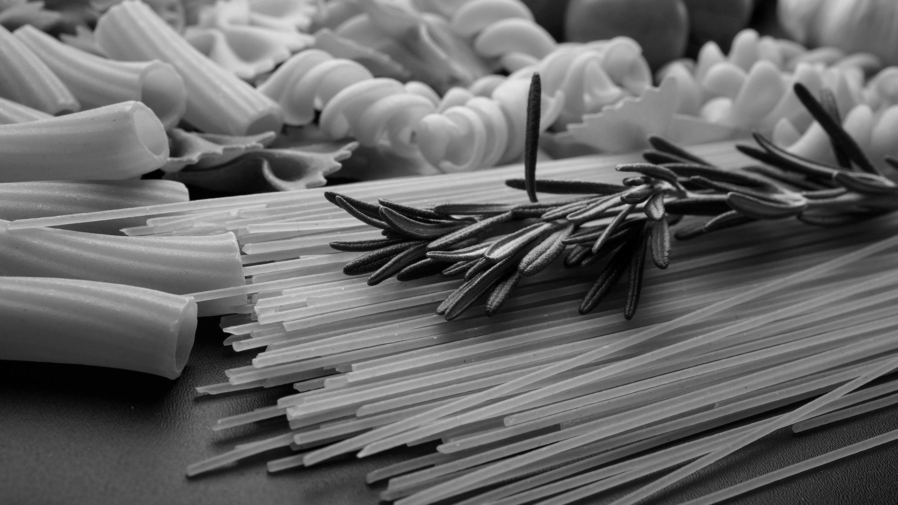

Pasta

Nos pâtes fraîches sont artisanales et fabriquées avec des farines bio dans notre laboratoire
Bienvenue à La Salumeria, l'épicerie italienne authentique située au coeur de Bordeaux. Plongez dans l'essence même de l'Italie en explorant notre sélection soigneusement choisie de produits fins, tous imprégnés de l'héritage culinaire italien. Un Voyage Culinaire: Dès que vous franchissez nos portes, vous serez transporté en Italie. Les arômes alléchants des fromages artisanaux, des charcuteries exquises et des olives parfumées vous accueilleront chaleureusement. La Salumeria est plus qu'une épicerie - c'est une invitation à un voyage culinaire authentique. Découvrez les secrets de la fabrication des pâtes fraîches, apprenez à assortir les vins italiens avec vos plats préférés, et plongez dans la culture gastronomique de l'Italie. La Salumeria vous invite à vivre une expérience gastronomique exceptionnelle, où chaque produit raconte une histoire et chaque repas devient un voyage. Découvrez l'Italie à Bordeaux, à La Salumeria.
Nos pâtes fraîches sont artisanales et fabriquées avec des farines bio dans notre laboratoire
Une sélection de produits de qualité issus de l'agriculture biologique et raisonnée
Vins et spiritueux italiens venant de plusieurs régions du Nord de l'Italie

Sergio
"Per ben condire l'insalata, ci vuole un avaro per l'aceto, un giusto per il sale e un pazzo per l'olio"
Pour bien assaisonner la salade, il faut être avare sur le vinaigre, être juste sur le sel et être généreux sur l'huile
Sergio, le maestro du barista, incarne l'art et la science de la préparation du café avec une passion inégalée. Originaire d'Italie, sa quête de l'excellence dans le domaine du café l'a conduit à devenir un développeur de saveurs et un concepteur de délices caféinés. Sa journée commence toujours par un rituel méticuleux, où il sélectionne avec soin les grains de café les plus fins provenant des contrées les plus exotiques. En tant que développeur web spécialisé dans le front end, Sergio applique la même précision et attention aux détails à sa pratique de barista. Chaque tasse qu'il crée est une œuvre d'art, où l'équilibre subtil des saveurs se mêle à une présentation visuelle impeccable. Chaque café est non seulement une expérience sensorielle, mais aussi visuelle, transportant les clients dans un monde où l'esthétique et le goût se fusionnent harmonieusement.
Carolina
"Cucinare come tua nonna è ancora meglio"
Cuisiner comme sa grand-mère, c'est encore mieux
Carolina, une artiste de l'épicerie fine italienne, évoque une expérience gustative qui transcende les frontières. Originaire de Rome, elle a développé une expertise exceptionnelle dans la sélection et la présentation des délices italiens. Chaque jour, Carolina entame son rituel en choisissant méticuleusement les ingrédients les plus exquis, des olives aux fromages raffinés, des pâtes artisanales aux huiles d'olive veloutées. Sa passion pour la richesse des saveurs italiennes se reflète dans la création d'une sélection de produits exquis, présentés avec élégance sur sa plateforme en ligne. En tant que connaisseuse de l'épicerie fine italienne, Carolina crée une expérience immersive pour ses clients. Chaque produit devient une pièce maîtresse visuelle, capturant l'essence des marchés animés de l'Italie. Les couleurs vives et les mises en page épurées transmettent une atmosphère authentique à travers son site.